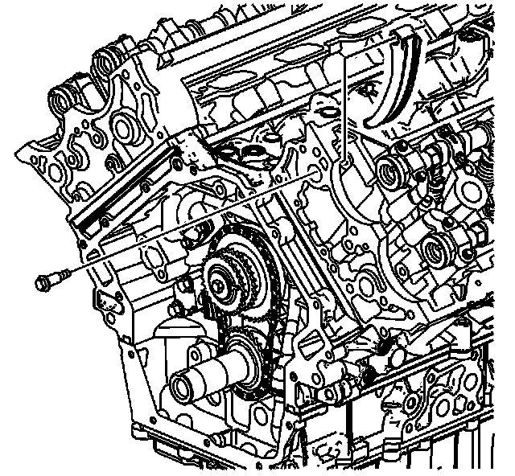
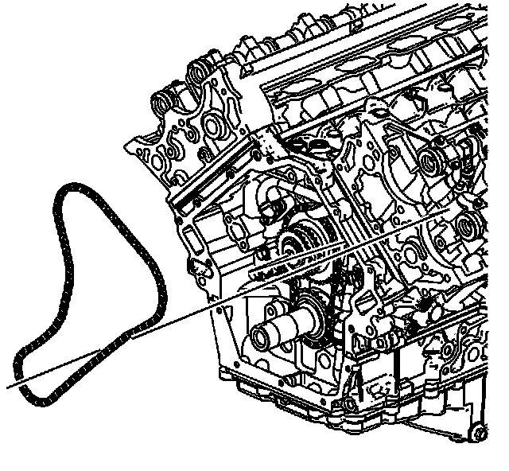
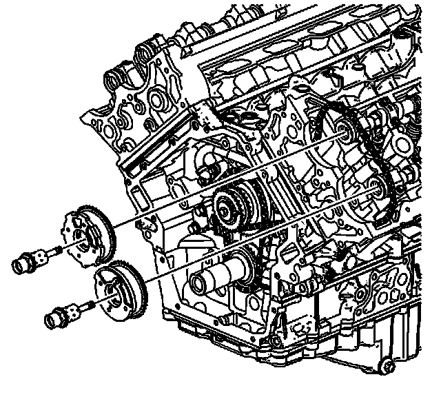
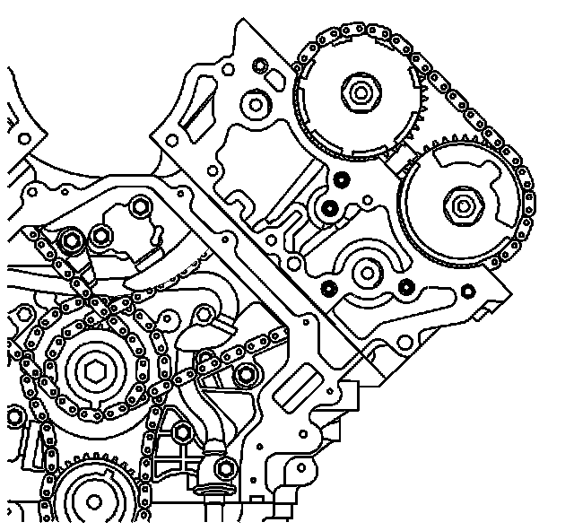
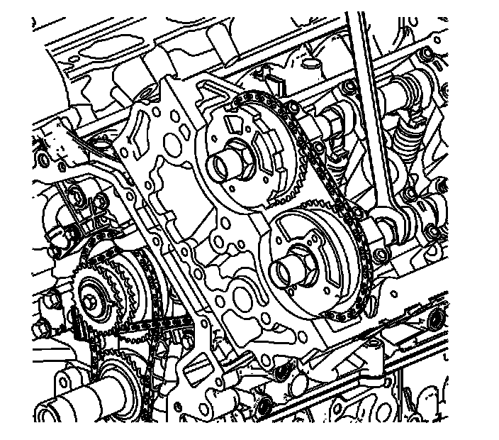
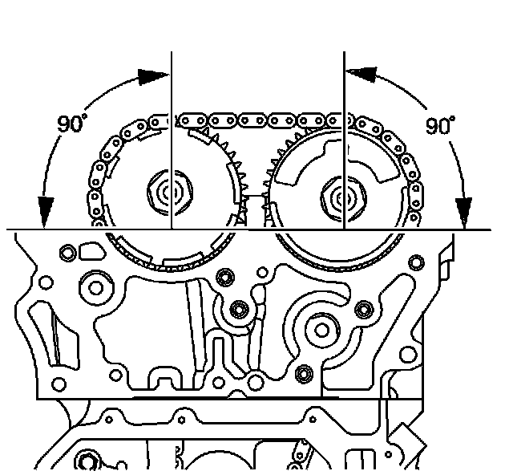
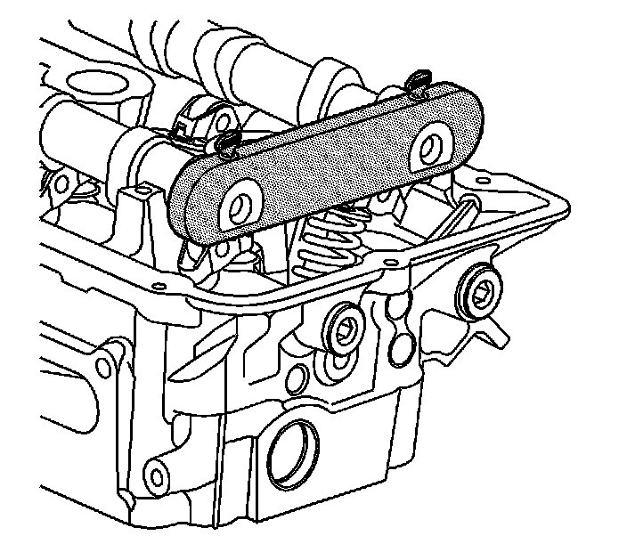
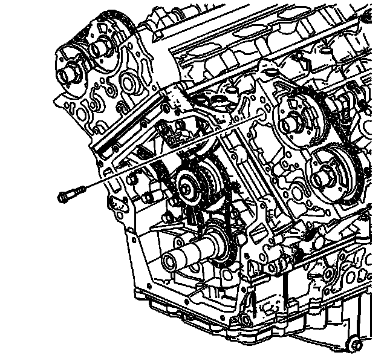
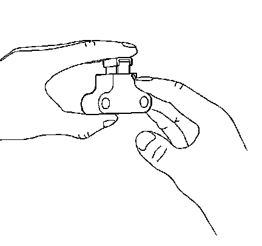
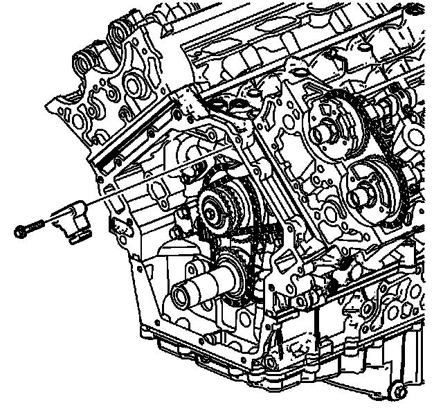

115. Secondary Camshaft Drive Chain Installation - Left Side
Secondary Camshaft Drive Chain Installation - Left Side
Tools Required
EN 46328 Camshaft Holding Tool

1. Install the left secondary camshaft drive chain guide.
2. Loosely install the lower left secondary camshaft drive chain guide bolt.

3. Install the left secondary camshaft drive chain shoe.
Notice: Refer to Fastener Notice (Fastener Notice) .
4. Install the left secondary camshaft drive chain shoe bolt.
Tighten the left secondary camshaft drive chain shoe bolt to 25 N.m (18 lb ft).

5. Install the left secondary camshaft drive chain by sliding the chain down through the left cylinder head and placing the chain on the end of the camshafts.
6. Route the left secondary camshaft drive chain around the inner row of the intermediate drive chain sprocket teeth.

7. Install the left intake and exhaust camshaft position actuators into the left secondary camshaft drive chain.

8. Install the left intake and exhaust camshaft sprockets onto the camshafts. The camshaft sprocket notch marked "LI" which indicates left intake, engages the intake camshaft pin and the camshaft sprocket notch marked "LE" which indicates left exhaust, engages the exhaust camshaft pin.

9. If necessary, use an open wrench on the hex cast near the front of each camshaft to help align the sprocket notch to the camshaft pin.
10. Loosely install the left intake and exhaust camshaft position actuator oil control valves.

11. Ensure the perpendicular alignment of the left intake and exhaust camshaft sprocket notches and camshaft pins to the cylinder head.

12. Install the EN 46328 to the left cylinder head camshafts.

13. Install the upper left secondary camshaft drive chain guide bolt.
Tighten BOTH the upper and lower left secondary camshaft drive chain guide bolts to 25 N.m (18 lb ft).

14. Collapse the left secondary camshaft drive chain tensioner using the following procedure:
1. Rotate the ratchet release lever counterclockwise and hold.
2. Collapse the left secondary camshaft drive chain tensioner shoe and hold.
3. Release the ratchet lever and slowly release the pressure on the shoe.
15. When the ratchet lever moves to the first detent a click should be heard and felt. Insert a pin through the hole in the release lever in order to lock the left secondary camshaft drive chain tensioner shoe in the collapsed position.

Important: Ensure the left secondary camshaft drive chain tensioner release lever is facing out.
16. Install the left secondary camshaft drive chain tensioner.
17. Install the left secondary camshaft drive chain tensioner bolts.
Tighten the left secondary camshaft drive chain tensioner bolts to 25 N.m (18 lb ft).
18. Remove pin from left secondary camshaft drive chain tensioner lever.